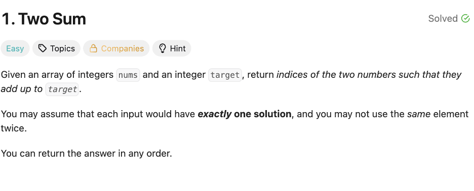

LeetCode
LeetCode is one of the most useful online resources for computer science majors because it helps students practice coding problems in a structured way. For Penn State students, this is especially valuable when preparing for technical interviews, improving algorithmic thinking, and gaining fluency with data structures. Working through problems consistently can also make classroom programming assignments feel more manageable.
LeetCode is especially helpful for topics such as arrays, strings, trees, graphs, dynamic programming, recursion, and backtracking. As students progress through Penn State coursework, practicing these patterns can reinforce what they learn in class while also preparing them for internship and full-time interviews.
How it helps a Penn State CS major
- Builds confidence with technical interview questions
- Improves problem-solving speed and accuracy
- Strengthens understanding of common algorithms and data structures
- Encourages consistent coding practice outside class

Official link: Visit LeetCode